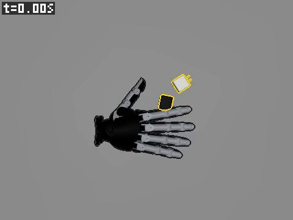

- Run 17 · started · 2.0 h of the 8 h budget
- stage: criteria
- 20 records · chain verified
- latest result: none yet
- best full task: no task gate yet (skill and feasibility tests do not count)
- latest note (hypothesis): GPU feasibility search budget: up to30min of4096-world offline CEM, then CPU physical replay and fresh handoff gates; no search controller…
more
GPU feasibility search budget: up to30min of4096-world offline CEM, then CPU physical replay and fresh handoff gates; no search controller will be called learned. The kinematic end-pinch paths fail because contact preload and finger-body interference matter. Search now optimizes two smooth joint-target knots plus wrist motion per0.8s block, rewarding full object orientation, active relative rotation and opposed retention while penalizing passive rotation, drop and hardware violations. Static scene identical CPU/GPU. State parity275 own contact states has1.1% contact-set mismatch and no overflow at160/480 buffers; qacc warnings on settled objects require outcome parity before GPU PPO. Bench4096 worlds25,093 transitions/s, no overflow at96/600. PPO method budget after teacher repair:50M transitions initial and up to200M if criterion curves keep improving, BC initialization plus free-standing deployable PPO actor; history4–6steps, all motion commands from network.
Reconstruction v4 · reference check VALID
The agent's reconstruction of the demonstration next to the demonstration, the 3D viewer, component statuses, validation numbers and limitations.
r0011 · reconstruction v4 the agent's own claim, not an official evaluation
reference check (check_reference.py): VALID · errors 0 · warnings 0 · error_list –
Final Stage1 reference: contract VALID, all ten provided checks pass plus explicit tabletop and plug–plug checks. Table max hand depth .63mm; plug depths .74/2.79mm; no detected finger/plug intersections or continuity flags. Object median… more
Components
| component | status | method | note |
|---|---|---|---|
| camera | partial | MoGe + common-support focal sensitivity + background rotation + stationary-object XY translation | Lateral translation estimated, height fixed; depth remains conditional on geometric priors. |
| object_geometry | ok | Blender + white dimension prior + common-plane black ratio | Black identity/mass unconfirmed. |
| object_motion | partial | silhouette fitting with observed blade-end and support priors | Static support consistent, observed blade axes checked; exact hidden depths/rotations remain unresolved. |
| hand_motion | ok | HaWoR + local dense MANO contact/separation fitter | 360valid frames, hand-mask IoU .8258, table≤.63mm, no self intersections/continuity flags. |
| interaction | ok | video phases and geometric checks | Plug contact passes with explicit thumb opposition; full hand–object and table penetration tested. |
| validation | ok | provided validator | All ten checks pass, plus explicit tabletop and plug–plug checks. Priors and occlusion remain limitations. |
Validation numbers
| schema | recon-validation/1 |
|---|---|
| utc | 2026-11-15T20:07:51Z |
| thresholds | {"contact_band_mm":5.0,"phase_fail_mm":10.0,"pen_warn_mm":5.0,"pen_fail_mm":10.0,"wrist_speed_mps":3.0,"wrist_accel_mps2":150.0,"tip_speed_mps":5.0,"bone_jump_deg":60.0,"obj_jump_m":0.1,"obj_rot_jump_deg":45.0,"g":9.81,"g_tol":2.0,"rest_drift_mm":5.0,"sink_mm":3.0,"hand_chain_mm":[140.0,230.0],"iou_ |
| checks | {"reprojection":{"status":"pass","per_part":null,"below_threshold":null,"note":"against your own masks: agreement with them is necessary, not sufficient (3D errors along the viewing ray are invisible here)"},"fingertip_distance":{"status":"pass","phases":null},"anatomical_contact":{"status":"pass"," |
| summary | {"reprojection":"pass","fingertip_distance":"pass","anatomical_contact":"pass","penetration_hand_object":"pass","self_penetration":"pass","continuity":"pass","physics":"pass","handedness_scale":"pass","sync":"pass","camera_focal":"pass"} |
| failed | – |
| incomplete | – |
| missing_required | – |
| overall | pass |
| overall_note | pass |
Limitations
- Low-percentile IoU .284/.381 in partially occluded frames; exact hidden pose and camera height remain model-dependent.
- Physical parameters and compliance inferred from comparable objects; consistency validation is not ground-truth reconstruction.
Open the 3D hand–object viewer (the agent's reconstruction data; 4 files)
Rendered by the site's own viewer module from the data the agent uploaded; nothing is synthesised.
recorded 2026-11-15 15:11 EST · version v4 · producer r2s2r-d2s recon
Earlier versions (3)
r0007 · v3
Reference v3: contract VALID and all ten physical/image/temporal validator checks pass. Median joint-scene IoU .784 white/.760 black; max hand-object penetration .74/2.79mm; no detected finger intersections or continuity flags. Camera depth remains prior-dependent.
r0006 · v2
Dense contact-aware reference: output contract VALID, validator overall pass with warnings. Full-mesh penetration .51/1.29mm and thumb opposition1/.986; white image residual,3.1% sampled finger intersections and one continuity warning remain.
r0004 · v1
First output-contract VALID reconstruction; physical quality remains partial: weak thumb opposition, black 11.45 mm penetration, MANO finger self-intersections. Not a passing physical reconstruction.
Criteria v2 · 1 revision
The agent's own verification criteria, with the reason for each revision.
r0014 · criteria v2
- revision reason: Map descriptive measurement names to the installed meas-4 API: max_rise_m, opposed_s, passive_rel_rotation_deg and goal_error_deg. No threshold or task condition changed.
- 8513 characters of criteria text
Criteria text
Own verification criteria v1
These are my claims about my simulation, not official success criteria or a task score. Source: TASK.md, the video, and reconstruction version4 (r0011, research/recon_final). Criteria are recorded before policy evaluation. A finite suite cannot prove success for every possible real placement or physical property.
Evidence and uncertainty
The right hand grasps white at about2.43s, finger-turns it at3.5–4.5s, carries it left, lowers it and releases by7s. Black contact is about8.23–12.9s, with its finger turn at10.4–11.1s. The plugs are rigid, with fixed blades; no throwing is shown. Occlusion leaves exact hidden contact and depth uncertain.
The recorded reference log measures white object-relative-to-wrist rotation78.9deg (axis in initial object frame[.368,.9049,.2139]), world rotation96.8deg, wrist rotation20.5deg. Black values are69.2deg (axis[−.3089,.9481,.0753]),89.7deg and31.1deg. Both relative turns are predominantly about object Y. Identical blades leave a180deg exchange ambiguity; I use the continuous minimum-turn branch, not a claimed180deg human spin. See research/reference_motion_final.json.
Measured airborne bottom clearance in checked intervals is white18.7–37.3mm and black62.9–83.5mm; body-centre rises about49mm/83mm. Carry displacement is about20cm, uncertain by several centimetres. Contact phases last about4.6s/4.7s, including placement support. Final blades are approximately vertical and both plugs remain released through the end of the clip (white over7s, black about1.6s). Absolute monocular scale/depth remains conditional on camera and charger priors.
The wrist is not uniformly palm-down. Anatomical palm-normal tilt from down has phase medians: white grasp7deg, turn22deg, carry41deg, place44deg; black grasp45deg, lift70deg, turn62deg, carry55deg, place48deg. Wrist-to-object distance is mostly0.11–0.15m, maximum0.161m. See research/wrist_phase_final.json and anatomical_wrist_final.npz. The human wrist basis is constructed from wrist-to-middle-MCP direction (robot −Z), anatomical palm normal (robot +Y), and their right-handed cross product (robot +X).
Deployment and episode
Evaluate30s episodes,500Hz commands and the specified wrist workspace, with2 or3 plugs in any white/black mix. Object order must not affect behaviour. Starts are physically settled lying poses on the right, including yaw/roll variation, touching pairs and leaning configurations. Report exact sampled position and physical-property ranges with each simulation/suite. Include boundary and out-of-distribution tests separately; do not silently claim full-table reach if the hand cannot reach an extreme placement.
Every logged task object is judged. The hand handles one at a time; more than one simultaneously held clear of support for over0.05s fails the sequential-handling criterion. This50ms allowance covers contact-transition discretization and brief clutter contact, not carrying two objects. All hardware rules must hold at every physics tick; any violation fails the episode.
Ordered stages
For each selected plug, perform pickup → active finger reorientation → carry/place/release. Repeat the same skills until none remain on the right. Task funnel stages are first_pickup, first_turn, first_place, all_finished; completing only the first plug is not task success. The chain includes entry pickup, reorientation, placement, and repetition/selection transitions using those same motions. Feasibility and skill gates must test the handoff states the preceding links actually produce.
- Pickup. Raise the body centre at least0.020m above its settled initial height and sustain an opposed thumb/other-finger grip clear of the environment for at least0.20s. The observed rises are49/83mm;20mm is an explicit robot adaptation allowing finger-pad/table clearance while still requiring a real lift. The0.20s grip is ten50Hz control updates, sufficient to distinguish a stable grasp from a collision. Standard checks: max_rise_m, held_s and opposed_s. Other plugs remain supported unless their own handling begins.
- Finger turn. Let theta be the initial angle between the plug blade axis and world +Z. During one opposed grip after lift, require object-relative-to-wrist rotation at least0.75×min(theta, a_kind), where a_white=78.9deg and a_black=69.2deg. Side-rest starts therefore require59.2/51.9deg. The75% tolerance allows the reference's pose uncertainty and robot morphology while retaining a substantial finger-driven turn. Tilted/leaning starts use the same criterion adapted to the turn actually needed. Goal-relative orientation must be within25deg at the end of the turning primitive and blades must subsequently satisfy the stricter final upright criterion. Passive relative rotation with nearly stationary finger joints must be at most15deg. This is an explicit micro-slip allowance of roughly one fifth of the demonstrated turn; rotating the wrist alone or passively pivoting in an unchanged grip fails. Standard checks: opposed_rel_rotation_deg, passive_rel_rotation_deg, opposed_s, goal_error_deg. Review videos must show coordinated finger motion and changing object orientation within the grip, not merely a proxy passing.
- Wrist style throughout handling. Align the reference's initial horizontal blade-axis yaw to the selected plug's initial yaw. Compare the robot root orientation to the anatomical reference orientation for the same physical phase, allowing monotonic phase time-warping and choosing the closest supported pose within that phase. Median SO(3) error must be≤35deg and95th percentile≤55deg; median palm-tilt error must be≤20deg. These explicit tolerances combine roughly12deg visible pose uncertainty with robot retargeting and varied starts; they must not be widened to rescue a candidate. During the turn, net wrist rotation must be≤50deg (observed20.5/31.1deg plus uncertainty). While held, wrist-to-body-centre distance must stay≤0.23m (observed≤0.161m plus the robot's larger geometry). These quantities are computed from poses, not images. A physically demonstrated hardware incompatibility requires a recorded calculation and criteria revision.
- Placement. Carry to body-centre y>0.17m, blades within15deg of +Z, lower onto the table, release and withdraw. The task's left boundary is0.15m; the extra20mm is a conservative placement margin, approximately half a body width. Fifteen degrees leaves a clear blades-up stable pose while allowing small model/contact error. The plug must contact the table before final hand release; tolerate at most0.05s contact-flag transition. Uncontrolled drops and throwing fail the skill even if the plug later stands. Standard checks: final_position components, final_orientation_error_deg to a blade-up goal (yaw irrelevant), environment_contact_s, rest_at_end_s, touching_hand_at_end and final speeds.
- Whole goal. At30s every plug, including a possible third, satisfies y>0.17m, blade tilt≤15deg and table support, with no hand contact for the last0.50s. For the last1.0s, linear speed must stay<0.02m/s and angular speed<0.20rad/s; no plug rests on the floor or another plug. These rest windows are shorter than the demonstrated final black rest1.6s but long enough to reject transient balancing. The right side is clear. Contact, support, tilt, velocity and sequential-motion conditions apply to every object, not just a selected example.
Rates, suites and verdict
Task pass rate is0.90 on fresh starts, with zero hardware-violation episodes; report95% Wilson intervals and per-stage counts. Ninety percent is my practical reliability target, not an official bar. Use at least32dev episodes and128final episodes, balanced across counts and kinds, with separate clutter and boundary reporting. Primitives are proven at≥0.25 and deployable skills mastered at≥0.80 as required by LEARNING.md; whole-task performance must still meet0.90. A passing final gate is necessary for a passing verdict. Target trials are judged individually against these same physical criteria, with limitations of the target's available logs stated. Every target trial is replayed before repairs.
Ambiguities: exact charger identity, COM, friction, compliance, camera height and hidden poses are uncertain. Geometry/physics priors and tested randomization ranges must be published. Model consistency and a simulated pass do not establish real-world success. A failure is reported as failure and prompts diagnosis, not a relaxed threshold.
Earlier versions (1)
r0012 · criteria v1
- 8582 characters of criteria text
Criteria text
Own verification criteria v1
These are my claims about my simulation, not official success criteria or a task score. Source: TASK.md, the video, and reconstruction version4 (r0011, research/recon_final). Criteria are recorded before policy evaluation. A finite suite cannot prove success for every possible real placement or physical property.
Evidence and uncertainty
The right hand grasps white at about2.43s, finger-turns it at3.5–4.5s, carries it left, lowers it and releases by7s. Black contact is about8.23–12.9s, with its finger turn at10.4–11.1s. The plugs are rigid, with fixed blades; no throwing is shown. Occlusion leaves exact hidden contact and depth uncertain.
The recorded reference log measures white object-relative-to-wrist rotation78.9deg (axis in initial object frame[.368,.9049,.2139]), world rotation96.8deg, wrist rotation20.5deg. Black values are69.2deg (axis[−.3089,.9481,.0753]),89.7deg and31.1deg. Both relative turns are predominantly about object Y. Identical blades leave a180deg exchange ambiguity; I use the continuous minimum-turn branch, not a claimed180deg human spin. See research/reference_motion_final.json.
Measured airborne bottom clearance in checked intervals is white18.7–37.3mm and black62.9–83.5mm; body-centre rises about49mm/83mm. Carry displacement is about20cm, uncertain by several centimetres. Contact phases last about4.6s/4.7s, including placement support. Final blades are approximately vertical and both plugs remain released through the end of the clip (white over7s, black about1.6s). Absolute monocular scale/depth remains conditional on camera and charger priors.
The wrist is not uniformly palm-down. Anatomical palm-normal tilt from down has phase medians: white grasp7deg, turn22deg, carry41deg, place44deg; black grasp45deg, lift70deg, turn62deg, carry55deg, place48deg. Wrist-to-object distance is mostly0.11–0.15m, maximum0.161m. See research/wrist_phase_final.json and anatomical_wrist_final.npz. The human wrist basis is constructed from wrist-to-middle-MCP direction (robot −Z), anatomical palm normal (robot +Y), and their right-handed cross product (robot +X).
Deployment and episode
Evaluate30s episodes,500Hz commands and the specified wrist workspace, with2 or3 plugs in any white/black mix. Object order must not affect behaviour. Starts are physically settled lying poses on the right, including yaw/roll variation, touching pairs and leaning configurations. Report exact sampled position and physical-property ranges with each simulation/suite. Include boundary and out-of-distribution tests separately; do not silently claim full-table reach if the hand cannot reach an extreme placement.
Every logged task object is judged. The hand handles one at a time; more than one simultaneously held clear of support for over0.05s fails the sequential-handling criterion. This50ms allowance covers contact-transition discretization and brief clutter contact, not carrying two objects. All hardware rules must hold at every physics tick; any violation fails the episode.
Ordered stages
For each selected plug, perform pickup → active finger reorientation → carry/place/release. Repeat the same skills until none remain on the right. Task funnel stages are first_pickup, first_turn, first_place, all_finished; completing only the first plug is not task success. The chain includes entry pickup, reorientation, placement, and repetition/selection transitions using those same motions. Feasibility and skill gates must test the handoff states the preceding links actually produce.
- Pickup. Raise the body centre at least0.020m above its settled initial height and sustain an opposed thumb/other-finger grip clear of the environment for at least0.20s. The observed rises are49/83mm;20mm is an explicit robot adaptation allowing finger-pad/table clearance while still requiring a real lift. The0.20s grip is ten50Hz control updates, sufficient to distinguish a stable grasp from a collision. Standard checks: max_height_m with the initial height supplied, held_s and opposed_held_s. Other plugs remain supported unless their own handling begins.
- Finger turn. Let theta be the initial angle between the plug blade axis and world +Z. During one opposed grip after lift, require object-relative-to-wrist rotation at least0.75×min(theta, a_kind), where a_white=78.9deg and a_black=69.2deg. Side-rest starts therefore require59.2/51.9deg. The75% tolerance allows the reference's pose uncertainty and robot morphology while retaining a substantial finger-driven turn. Tilted/leaning starts use the same criterion adapted to the turn actually needed. Goal-relative orientation must be within25deg at the end of the turning primitive and blades must subsequently satisfy the stricter final upright criterion. Passive relative rotation with nearly stationary finger joints must be at most15deg. This is an explicit micro-slip allowance of roughly one fifth of the demonstrated turn; rotating the wrist alone or passively pivoting in an unchanged grip fails. Standard checks: opposed_rel_rotation_deg, opposed_passive_rotation_deg, opposed_held_s, final_relative_orientation_error_deg. Review videos must show coordinated finger motion and changing object orientation within the grip, not merely a proxy passing.
- Wrist style throughout handling. Align the reference's initial horizontal blade-axis yaw to the selected plug's initial yaw. Compare the robot root orientation to the anatomical reference orientation for the same physical phase, allowing monotonic phase time-warping and choosing the closest supported pose within that phase. Median SO(3) error must be≤35deg and95th percentile≤55deg; median palm-tilt error must be≤20deg. These explicit tolerances combine roughly12deg visible pose uncertainty with robot retargeting and varied starts; they must not be widened to rescue a candidate. During the turn, net wrist rotation must be≤50deg (observed20.5/31.1deg plus uncertainty). While held, wrist-to-body-centre distance must stay≤0.23m (observed≤0.161m plus the robot's larger geometry). These quantities are computed from poses, not images. A physically demonstrated hardware incompatibility requires a recorded calculation and criteria revision.
- Placement. Carry to body-centre y>0.17m, blades within15deg of +Z, lower onto the table, release and withdraw. The task's left boundary is0.15m; the extra20mm is a conservative placement margin, approximately half a body width. Fifteen degrees leaves a clear blades-up stable pose while allowing small model/contact error. The plug must contact the table before final hand release; tolerate at most0.05s contact-flag transition. Uncontrolled drops and throwing fail the skill even if the plug later stands. Standard checks: final_position components, final_orientation_error_deg to a blade-up goal (yaw irrelevant), environment_contact_s, rest_at_end_s, final_hand_contact and final speeds.
- Whole goal. At30s every plug, including a possible third, satisfies y>0.17m, blade tilt≤15deg and table support, with no hand contact for the last0.50s. For the last1.0s, linear speed must stay<0.02m/s and angular speed<0.20rad/s; no plug rests on the floor or another plug. These rest windows are shorter than the demonstrated final black rest1.6s but long enough to reject transient balancing. The right side is clear. Contact, support, tilt, velocity and sequential-motion conditions apply to every object, not just a selected example.
Rates, suites and verdict
Task pass rate is0.90 on fresh starts, with zero hardware-violation episodes; report95% Wilson intervals and per-stage counts. Ninety percent is my practical reliability target, not an official bar. Use at least32dev episodes and128final episodes, balanced across counts and kinds, with separate clutter and boundary reporting. Primitives are proven at≥0.25 and deployable skills mastered at≥0.80 as required by LEARNING.md; whole-task performance must still meet0.90. A passing final gate is necessary for a passing verdict. Target trials are judged individually against these same physical criteria, with limitations of the target's available logs stated. Every target trial is replayed before repairs.
Ambiguities: exact charger identity, COM, friction, compliance, camera height and hidden poses are uncertain. Geometry/physics priors and tested randomization ranges must be published. Model consistency and a simulated pass do not establish real-world success. A failure is reported as failure and prompts diagnosis, not a relaxed threshold.
Simulation · 1 version
The training simulation as recorded by the agent, per version.
r0013 · simulation v1

Changes in this version
First simulation version.
Recorded fields
- Reconstruction version
- 4
- Simulator
- name
- MuJoCo
- version
- 3.17.0
- physics_step_s
- 0.001
- solver
- Newton
- iterations
- 100
- ls_iterations
- 50
- tolerance
- 1e-06
- integrator
- implicitfast
- cone
- elliptic
- multiccd
- yes
- contact
JSON (5 keys)
{"condim":3,"solref":[0.005,1.0],"solimp":[0.95,0.99,0.001],"hand_friction":[0.9,0.005,0.0001],"objects_and_table_friction":[0.5,0.005,0.0001]}
- Reference
- record
- r0011
- how
- Contact sequence, blade axis, object-relative turn angles, anatomical wrist profiles. Direct tip IK replay is a diagnostic baseline only, not the controller or training action reference.
- retarget_validation
- 0.0178409
- retarget_limitation
- Raw kinematic fingertip retarget has17.84mm penetration and is not executable. Do not imitate its joint trajectory; prove physical grip/turn controllers independently.
- Controllers
- implementation
- Unmodified copied d2s_warp_scene.py CpuHand/WarpHandEnv
- wrist
- wrist-1, full gravity compensation, 30N/2Nm force/torque norms,2000/60 translational and20/.4 rotational PD,2.5m/s and6rad/s executed-target rates.
- fingers
- 1kHz PD with exact public gains, armature, torque saturation and target clipping; per-tick position/speed/effort audit.
- hand_mass_kg
- 0.7088
- encoders
{"position_sigma":0.002,"velocity_sigma":0.05}
- Initial conditions
- start_pose
- research/start_pose.json
- hand
JSON (3 keys)
{"wrist_position":[-0.2,-0.1,0.3],"wrist_orientation":[0.5,-0.5,-0.5,0.5],"q":[0.1,-0.2,0.1,0.1,0.12,0.0,0.12,0.12,0.12,0.0,0.12,0.12,0.12,0.0,0.12,0.12,0.12,0.0,0.12,0.12]}- objects
- 2 or3 uniformly, independent white/black kinds; XY uniform x[−.22,.15],y[−.26,.10]m, separated or30%clutter. Blade axes initially near horizontal, arbitrary yaw/roll; set support-safe height and settle1.5s. Suite will…
more
2 or3 uniformly, independent white/black kinds; XY uniform x[−.22,.15],y[−.26,.10]m, separated or30%clutter. Blade axes initially near horizontal, arbitrary yaw/roll; set support-safe height and settle1.5s. Suite will publish starts and contact checks. - limitations
- This initial sampling is a reachable table patch, not a proof over the entire1.2m table. Boundary/extreme reach tests will be reported separately.
- Episode
- duration_s
- 30
- commands_hz
- 500
- controller_hz
- 1000
- neural_update_hz_planned
- 50
- workspace
[[-0.45,-0.4,0.03],[0.35,0.4,0.5]]- termination
- Target30s; training may end on irreversible drop/out-of-reach failure.
- Validation
- static_parity
JSON (5 keys)
{"errors":(empty),"warnings":(empty),"notes":["multiccd on (default): MJWarp's float32 polygon clipping gives a different contact count in a few % of mesh-mesh states; no outcome effect measured. Disabling it changes the physics: do it on both backends or not at all","hand right, 20 finger joints, hand mass 0.7088 kg, 6 object tree(s): [\"plug0_white\",\"plug0_black\",\"plug1_white\",\"plug1_black\",\"plug2_white\",\"plug2_black\"]","largest mesh has 6627 vertices (convex hull used for collision); hull size drives GPU narrowphase cost"],"pair_type_counts":{"mesh-plane":66,"box-mesh":66,"mesh-mesh":1603},"status":"pass"}- dynamic_nominal_grasp
JSON (4 keys)
{"candidate":13,"max_[redacted]_m":0.0011907589720711043,"hardware_max":[0.00039706291301216945,0.3826438590172181,0.7878448015088055],"scope":"Nominal local controller test, not a gate or learned-policy result"}- starts
- Initial local random2/3 starts rest supported with no hand contact; formal frozen-suite start check still pending.
- hardware
- Finger limits, torque gains and mass loaded directly by public HandScene; observed nominal pickup has no rule violation.
- gpu
- Not yet trained or relied on; states/outcome parity and in-hand throughput required before GPU PPO.
- Media
- initial_image
- research/initial_scene.png
- kinematic_replay
- research/evaluator/reference_render/videos/0/right.mp4
- domain_randomization
- Initial version: starts/count/kind only; physical parameters fixed priors. Broader dynamics randomization is not yet verified.
Iterations · not yet
Each evaluated training iteration; the latest is expanded.
Policy with privileged information (0) · the policy observes more than proprioception and object states (for example a teacher)
Deployable policy (no privileged information) (0) · the policy observes only proprioception and object states
Gates · 1 (1 accepted, 0 rejected) · no final gate
Every change the agent kept or dropped went through the gate: the agent's own evaluation, frozen and run by the harness on fixed starts, compared with the best policy so far. Accepted means the predicted stage improved without other stages getting worse.
task v1 · task suite · chain start → pickup → turn → place → repeat_remaining · start check passed 63/64 · stages first_pickup → first_turn → first_place → all_finished · pass rate 0.9 · 32 dev starts — Full30s2/3-plug task in reachable patch x[-.22,.15],y[-.26,.10], arbitrary yaw/roll and30%clutter generation, both kinds, physical priors fixed. Independent criteria judge incl. per-object active turn and phase wrist style. Final goalall plugs left/upright/stable/released. Chain kernels are reused f
pickup_feasible v1 · feasibility suite · proves pickup · follows start · 75% of starts from handoff states (63 states) · start check passed 64/64 · stages pickup_done · pass rate 0.25 · 32 dev starts — Opposed unsupported body pickup, retaining the lifted plug. Passive plugs remain supported by the table; explicit opposed/rise predicates apply to the manipulated plug.
pickup_skill v1 · skill suite · proves pickup · follows start · 75% of starts from handoff states (63 states) · start check passed 64/64 · stages pickup_done · pass rate 0.8 · 32 dev starts — Opposed unsupported body pickup, retaining the lifted plug. Passive plugs remain supported by the table; explicit opposed/rise predicates apply to the manipulated plug.
| Gate | Time | Suite | Decision | Predicted change | Success | Method | Hypothesis |
|---|---|---|---|---|---|---|---|
| r0017 | pickup_feasible v1 | baseline | pickup_done | 18/32 | scripted IK feasibility baseline | A dynamically tested thumb-index end pinch with yaw-adapted IK and a slow vertical lift retains a plug across at least25% of deployment starts; unused fingers keep the tested clearance posture. first failed stage: pickup_done 14 · complete 18 |


Verification · not yet
Verification results recorded by the agent — the agent's own claim, not an official evaluation.
Policy with privileged information (0) · the policy observes more than proprioception and object states (for example a teacher)
Deployable policy (no privileged information) (0) · the policy observes only proprioception and object states
Notes · 9
Hypotheses, decisions, reflections and blockers.
more
more
more
more
more
more
more
more
more
Timeline · 20 records
Every record in the order received; a simulation, iteration or verification before the first reconstruction is marked out of order.